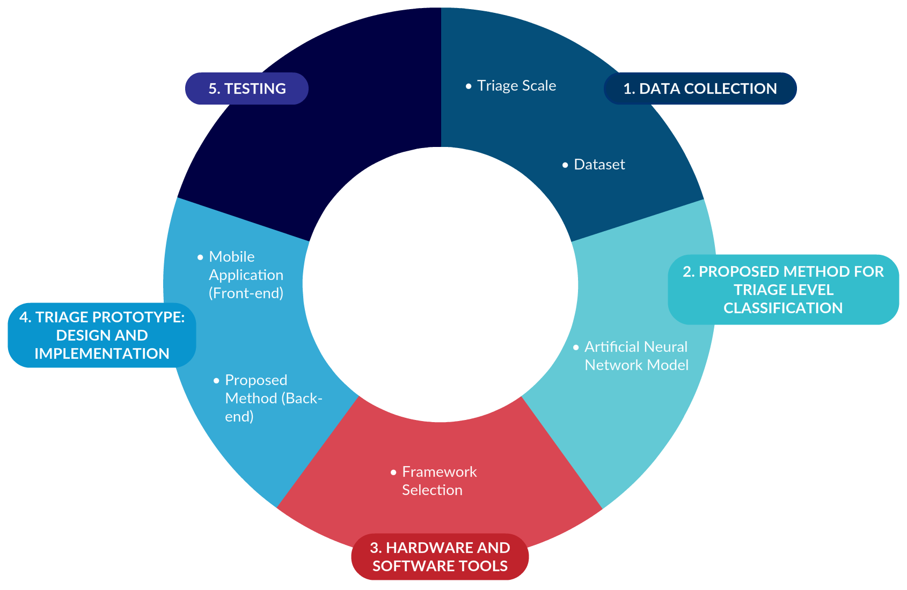

Thesis Defense
What is Triage?
What is Triage?
What is Triage?
- Long waiting time
- Long time to determine
the urgency level
High demand for traffic accidents in Ecuador 2019
Triage system design for traffic accidents medical emergency patients using neural network techniques
Agenda
1. Introduction: Contribution
2. Objectives: General and Specifics
3. Theoretical Framework: Triage Scales, Related Works
4. Methodology: Data Collection, Implementation, Testing
5. Experimental Set-Up: Metrics and Experiments Performed
6. Results and Discussion
7. Conclusions and Future Work
1. Introduction
1. Introduction
1.1. Contribution
- Develop a mobile application to collect patient symptoms and classify them.
- Use artificial neural network to determine the patient critical level.
- Focused on traffic accidents.


2. Objectives
2. Objectives
2.1. General Objective
To design a prototype of a triage system for determining the patient critical level in traffic accidents emergency services by using neural networks techniques.
2.2. Specific Objectives
- To define attributes that determine the patient condition.
- To design a neural network architecture to categorize patients with traffic accidents according to their level of urgency of care.
- To implement the proposed approach using adequate hardware and software.
- To measure the efficiency achieved by the proposed approach in terms of sensitivity, specificity, accuracy percentage and execution time.
3. Theoretical Framework
3. Theoretical Framework
3.1. Triage Scales
- Australasian Triage Scale (ATS)
- Canadian Triage and Acuity Scale (CTAS)
- Emergency Severity Index (ESI)
- Manchester Triage Scale (MTS)
3. Theoretical Framework
Manchester Triage Scale (MTS)
| Scale Category | Maximum Time of Attention |
|---|---|
| MTS 1: Inmediate | 0 minutes |
| MTS 2: Very Urgent | 10 minutes |
| MTS 3: Urgent | 60 minutes |
| MTS 4: Standard | 120 minutes |
| MTS 5: Non-urgent | 240 minutes |
3. Theoretical Framework
Manchester Triage Scale (MTS)
Reasons for Consultation or Presentations
- Asthma
- Back Pain
- Diabetes
-
Major Trauma
-
Abdominal Pain
- ... and more
3. Theoretical Framework
3.2. Traditional Triage and Modern Triage
| Traditional Triage | Modern Triage |
|
|
| Manual approach without technical features and has low precision. | Automated process reducing classification time, requiring a training process to predict triage level. |
4. Methodology
4. Methodology
4.1. Thesis Stages

4. Methodology
4.1.1. Data Collection
Triage Scale
Manchester Triage Scale
Dataset
- Data obtained at San Vicente de Paul hospital
- 43 patients registered
- 28 discriminators based on MTS
- 5 vital signs
- Age
- Gender
- Reason for consultation
- Triage level
4. Methodology
4.1.2. Neural Network Model
0.08
0.02
0.16
0.94
0.33
4. Methodology
4.1.3. Hardware and Software Tools
Training Framework: Tensorflow
- + High performance and matching the best in the industry.
- + Excelent community support.
- + Training progress monitoring and tracking several metrics.
- - Only support NVIDIA GPUs and the only full language support of Python.
- - Steep learning curve.
4. Methodology
4.1.3. Hardware and Software Tools
Computer Used for Development
| Brand | MSI |
| CPU | Intel® Core™ i7-8750H, 2.20 GHz, 6 cores and 12 logical processors. |
| GPU | GeForce® GTX 1060 with 6GB GDDR5 |
| RAM | 16 GB |
| OS | Windows 10 Home |
| System Type | 64-bit Operating System |
4. Methodology
4.1.3. Hardware and Software Tools
Mobile Application Framework: Flutter
- Uses Dart
- Develop for iOS and Android from a single codebase.
- Do more with less code.
- Hot Reload
- Native App Performance
5. Experimental Set-Up
5. Experimental Set-Up
5.1. Performance Metrics
Accuracy
\[Classified Patients \over Total Patients\]
Sensitivity
\[True Positive \over True Positive + False Negative\]
Specificity
\[True Negative \over True Negative + False Positive\]
Execution Time
5.2. Experiment 1: Parameter Settings
Experiment 1.1
- 10 tests
- Learning Rate
- Epochs
Experiment 1.2
- 7 tests
- Hidden Neurons
- Activation Functions
- Loss Function
- Optimizer
5.3. Experiment 2: Specificity and Sensitivity Metrics
- True Positives
- True Negatives
- False Positives
- False Negatives
5.4. Experiment 3: Execution Time
- 4 Tests
- Milliseconds
- Development Computer
- Google Cloud Server
6. Results and Discussion
6. Results and Discussion
6.1. Neural Network Experiments
Experiment 1: Parameter Settings
| Test N° | Learning Rate | Epochs | Loss | Training Data Accuracy |
Test Data Accuracy |
|---|---|---|---|---|---|
| 1 | 0.01 | 500 | 0.1594 | 41.03% | 25.00% |
| 2 | 0.01 | 1000 | 0.0091 | 94.87% | 75.00% |
| 3 | 0.005 | 1500 | 0.0518 | 92.31% | 25.00% |
| 4 | 0.005 | 2000 | 0.0042 | 97.44% | 25.00% |
| 5 | 0.001 | 2500 | 0.0092 | 97.44% | 75.00% |
| 6 | 0.001 | 3000 | 0.0207 | 97.44% | 75.00% |
| 7 | 0.0005 | 3500 | 0.0104 | 97.44% | 50.00% |
| 8 | 0.0005 | 4000 | 0.0515 | 92.31% | 50.00% |
| 9 | 0.0001 | 4500 | 0.0693 | 89.74% | 25.00% |
| 10 | 0.0001 | 5000 | 0.0492 | 92.31% | 50.00% |
6. Results and Discussion
6.1. Neural Network Experiments
Experiment 1: Parameter Settings
6. Results and Discussion
6.1. Neural Network Experiments
Experiment 1: Parameter Settings
| Test N° | Hidden Neurons | Hidden Activation Function | Output Activation Function | Loss Function | Optimizer | Training Data Accuracy | Test Data Accuracy | Loss |
|---|---|---|---|---|---|---|---|---|
| 1 | 16 | relu | sigmoid | mean squared error | adam | 97.44% | 75.00% | 0.0092 |
| 2 | 5 | relu | sigmoid | mean squared error | adam | 89.74% | 75.00% | 0.0695 |
| 3 | 30 | relu | sigmoid | mean squared error | adam | 84.62% | 50.00% | 0.0736 |
| 4 | 16 | sigmoid | sigmoid | mean squared error | adam | 97.44% | 75.00% | 0.0368 |
| 5 | 16 | relu | tanh | mean squared error | adam | 82.05% | 25.00% | 0.7 |
| 6 | 16 | relu | sigmoid | binary crossentropy | adam | 48.72% | 25.00% | 0.0424 |
| 7 | 16 | relu | sigmoid | mean squared error | adadelta | 25.64% | 50.00% | 0.5222 |
6. Results and Discussion
6.1. Neural Network Experiments
Experiment 2: Precision Metrics
| Metric | Training Data | Validation Data |
|---|---|---|
| Specificity | 97.44% | 50% |
| Sensitivity | 99.36% | 87.50% |
6. Results and Discussion
6.1. Neural Network Experiments
Experiment 3: Execution Time
| Model on MSI Laptop | |
| Test N° | Execution Time (ms) |
| 1 | 294 |
| 2 | 310 |
| 3 | 271 |
| 4 | 333 |
| Average Time: | 302 |
| Model on Google Cloud Server | |
| Test N° | Execution Time (ms) |
| 1 | 511 |
| 2 | 473 |
| 3 | 502 |
| 4 | 522 |
| Average Time: | 502 |
6. Results and Discussion
6.2. Additional Results
Mobile Application Prototype for Automatic Triage Process
7. Conclusions and Future Work
7. Conclusions
7.1. Conclusions
The use of artificial intelligence to improve patient care in medical centers is undoubtedly a very important step to improve people’s quality of life.
- The attributes to determine the condition of the patients are based on the reasons for consultation and discriminators of MTS.
- The neural network proposed does not have a very complex design since it has only 3 layers and the results obtained have been very satisfactory even with a small dataset.
7. Conclusions
7.1. Conclusions
- The implementation of an app with a neural network model is a feasible solution. Since it is portable and triage can be performed in a fast way.
7.2. Future Work
- To expand the triage system to cover all the reasons of consultation that MTS contains.
- To integrate medical equipment that can measure vital signs to avoid having to be filled manually and to have them in real time.
- To connect with all departments of the medical center to have everything automated.